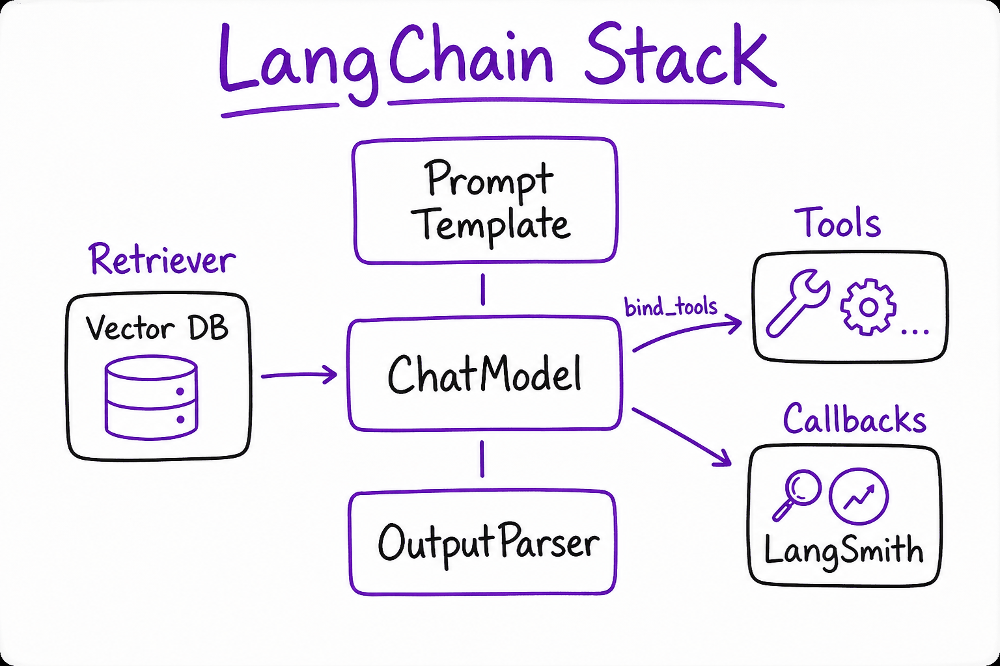
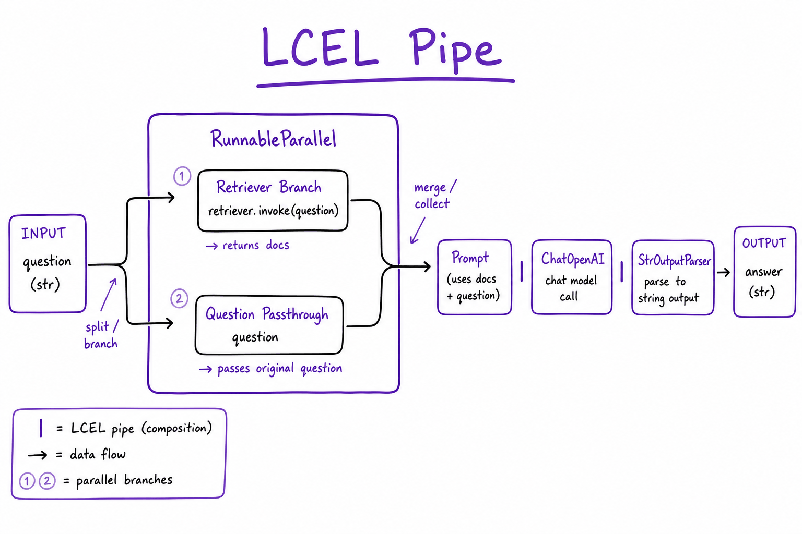
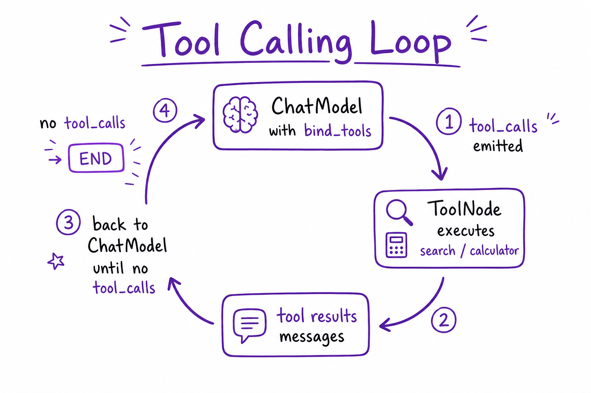

LangChain // AI Tech
Composable LLM framework: runnables (LCEL pipe), prompts, retrievers, tools, memory, and callbacks. The component layer most orchestrators (LangGraph, LlamaIndex integrations) build on.

LangChain stack: Prompt | ChatModel | OutputParser as LCEL chain; retriever feeds context from vector DB; tools bound via bind_tools; callbacks → LangSmith traces.
01 — What & Why
Problem: LLM apps repeat the same glue: prompt templates, model wrappers, output parsers, retriever wiring, tool schemas, and tracing hooks. LangChain standardizes these as composable Runnable objects.
Functional
- Compose prompts, models, parsers with LCEL pipe operator
- Integrate vector stores as retrievers for RAG pipelines
- Bind tools to chat models; feed into LangGraph ToolNode
- Stream, batch, and async invoke uniformly across steps
Non-Functional
- Modularity — swap OpenAI for Anthropic by changing one Runnable
- Observability — callbacks + LangSmith tracing
- Maintainability — explicit chains beat opaque agent helpers
- Version risk — pin packages; test on upgrade
Position in stack: LangChain = components. LangGraph = orchestration with cycles and checkpointing. LlamaIndex overlaps on RAG indexing. API layer: OpenAI API Patterns.
01a — Core Concepts
| Term | Definition | Gotcha |
|---|---|---|
| Runnable | Unit with invoke/stream/batch/async variants | Nearly everything in LC is a Runnable |
| LCEL | LangChain Expression Language: a | b | c | DAG only — no cycles (use LangGraph for loops) |
| Retriever | invoke(query) → documents Runnable | Wraps VectorStore; adds MMR, compression, multi-query |
| VectorStore | Storage + similarity_search API | Chroma, Pinecone, pgvector integrations |
| Tool | @tool decorated function + JSON schema | Description text strongly affects routing |
| Callback | Hooks on chain/LLM/tool lifecycle events | LangSmith auto-registers when configured |
01b — API / Interface Surface
from langchain_openai import ChatOpenAI
from langchain_core.prompts import ChatPromptTemplate
from langchain_core.output_parsers import StrOutputParser
from langchain_core.runnables import RunnablePassthrough
prompt = ChatPromptTemplate.from_messages([
("system", "Answer only from context:\n{context}"),
("human", "{question}"),
])
llm = ChatOpenAI(model="gpt-4o-mini", temperature=0)
chain = prompt | llm | StrOutputParser()
# RAG-style input wiring
rag_chain = {
"context": retriever | format_docs,
"question": RunnablePassthrough(),
} | chain
answer = rag_chain.invoke("What is our refund policy?") | Method | Purpose |
|---|---|
invoke(input) | Sync single run |
ainvoke(input) | Async for FastAPI |
stream(input) | Partial outputs per step |
batch([...]) | Parallel batch where supported |
with_config(tags=[...]) | Trace metadata for LangSmith |
Runnable interface cheat sheet
| Input type | Example chain | Output |
|---|---|---|
| dict | RAG chain with context + question keys | str or dict |
| str | prompt | llm | StrOutputParser() | str |
| Message list | ChatModel only | AIMessage |
| Documents | retriever | format_docs | str context block |
02 — When to Use / When NOT
| Case | LangChain? | Alternative |
|---|---|---|
| Simple RAG chain (retrieve → generate) | Yes | LlamaIndex QueryEngine |
| ReAct agent with tool loop | Maybe | LangGraph for control + HITL |
| Role-based multi-agent crew | Maybe | CrewAI |
| One-shot completion, no retrieval | Maybe | Direct API simpler |
| Complex ingestion + citations | Maybe | LlamaIndex indexing focus |
03 — Architecture
User Query
|
+---> Retriever -----> format_docs --+
| (Vector DB) |
+---> RunnablePassthrough (question) -+--> Prompt Template
|
v
ChatModel (OpenAI)
|
v
OutputParser --> AnswerPackage map (2025):
langchain-core Runnable, LCEL, prompts, parsers
langchain-openai ChatOpenAI, OpenAIEmbeddings
langchain-chroma Chroma vector store integration
langgraph Stateful graphs (separate package)
langsmith Tracing UI (SaaS) 04 — Deep Dive: LCEL

LCEL pipe: prompt | model | parser with parallel RunnableParallel branches for context and question.
LCEL composes Runnables with |. Each step’s output becomes the next step’s input (with dict merging for parallel branches).
from langchain_core.runnables import RunnableParallel, RunnableLambda
chain = RunnableParallel(
context=retriever | format_docs,
question=RunnablePassthrough(),
) | prompt | llm | StrOutputParser()
# Fallbacks and retries
robust_llm = ChatOpenAI(model="gpt-4o-mini").with_fallbacks([
ChatOpenAI(model="gpt-4o"),
])
chain_with_retry = prompt | robust_llm.with_retry(stop_after_attempt=3) | parserRunnableLambdafor custom Python transformsastream_eventsfor fine-grained token streaming in UI- LCEL chains are DAGs — agent loops need LangGraph
Full RAG chain (copy-paste starter)
from langchain_openai import ChatOpenAI, OpenAIEmbeddings
from langchain_chroma import Chroma
from langchain_core.prompts import ChatPromptTemplate
from langchain_core.output_parsers import StrOutputParser
from langchain_core.runnables import RunnablePassthrough
from langchain_text_splitters import RecursiveCharacterTextSplitter
def format_docs(docs):
return "\n\n".join(d.page_content for d in docs)
splitter = RecursiveCharacterTextSplitter(chunk_size=512, chunk_overlap=50)
chunks = splitter.split_documents(raw_docs)
vectorstore = Chroma.from_documents(
chunks, OpenAIEmbeddings(model="text-embedding-3-small"))
retriever = vectorstore.as_retriever(search_kwargs={"k": 12})
prompt = ChatPromptTemplate.from_messages([
("system", "Answer from context only. Cite sources.\n{context}"),
("human", "{question}"),
])
chain = (
{"context": retriever | format_docs, "question": RunnablePassthrough()}
| prompt | ChatOpenAI(model="gpt-4o-mini") | StrOutputParser()
)
print(chain.invoke("Refund policy for EU?"))Swap Chroma for Pinecone/pgvector in production. Add reranker between retriever and prompt for better precision.
05 — Deep Dive: Retrievers
from langchain_chroma import Chroma
from langchain_openai import OpenAIEmbeddings
vectorstore = Chroma.from_documents(
documents=chunks,
embedding=OpenAIEmbeddings(model="text-embedding-3-small"),
collection_name="kb_v1",
)
retriever = vectorstore.as_retriever(
search_type="mmr",
search_kwargs={"k": 20, "fetch_k": 50},
)Retriever wrappers
- MultiQueryRetriever — LLM expands query variants; improves recall
- ContextualCompressionRetriever — rerank/filter chunks before prompt
- EnsembleRetriever — BM25 + vector fusion
Production: external vector DB (Pinecone, pgvector), not in-process Chroma. Hybrid patterns: Hybrid Search.
from langchain.retrievers import EnsembleRetriever
from langchain_community.retrievers import BM25Retriever
bm25 = BM25Retriever.from_documents(chunks)
bm25.k = 20
vector_retriever = vectorstore.as_retriever(search_kwargs={"k": 20})
hybrid = EnsembleRetriever(
retrievers=[bm25, vector_retriever],
weights=[0.4, 0.6],
)
# Retrieve 20-30 candidates -> cross-encoder rerank -> top 5 to prompt
06 — Deep Dive: Tools

bind_tools on ChatModel: model emits tool_calls, ToolNode executes, results fed back until END.
from langchain_core.tools import tool
@tool
def search_kb(query: str) -> str:
"""Search internal knowledge base."""
return kb.search(query)
llm_with_tools = ChatOpenAI(model="gpt-4o-mini").bind_tools([search_kb])
# In LangGraph:
from langgraph.prebuilt import ToolNode
tool_node = ToolNode([search_kb])Tool descriptions are part of the prompt the model sees — write them like API docs. Validate args before side effects. See Tool Calling & Functions.
07 — Deep Dive: Memory
Legacy: ConversationBufferWindowMemory, ChatMessageHistory. Production pattern: don’t use in-process memory in serverless or multi-worker APIs.
# Production: external session store
history = load_messages_from_postgres(session_id)
chain.invoke(
{"question": q, "chat_history": history},
config={"configurable": {"session_id": session_id}},
)- Pass message list explicitly in invoke input or LangGraph state
- Trim history to last N turns or token budget (Context Window)
- Agent memory patterns: Agent Memory
08 — Deep Dive: Callbacks
# LangSmith (set env vars)
# LANGCHAIN_TRACING_V2=true
# LANGCHAIN_API_KEY=...
# LANGCHAIN_PROJECT=prod-rag
chain.invoke(input, config={"tags": ["prod", "rag-v2"], "metadata": {"tenant": "acme"}})Custom BaseCallbackHandler for token counts, latency histograms, and PII redaction in logs. Integrates with LLM Observability stacks.
from langchain_core.callbacks import BaseCallbackHandler
import time
class MetricsHandler(BaseCallbackHandler):
def __init__(self):
self.start = None
def on_llm_start(self, serialized, prompts, **kwargs):
self.start = time.time()
def on_llm_end(self, response, **kwargs):
latency_ms = (time.time() - self.start) * 1000
usage = response.llm_output.get("token_usage", {})
log_metric("llm.latency_ms", latency_ms, usage)
chain.invoke(input, config={"callbacks": [MetricsHandler()]})
09 — Production & Ops
| Concern | Practice |
|---|---|
| Versions | Pin langchain-core, langchain-openai; CI golden tests |
| Agents | Explicit LangGraph graphs over magic agents |
| Eval | LangSmith datasets; regression on prompt changes |
| Secrets | Env vars; never commit API keys |
| Performance | Async ainvoke; batch embed separately |
| Package layout | langchain-core (runnables), langchain-openai, integration packages per vector DB |
| Deprecation | Avoid LLMChain, ConversationChain; use LCEL |
Upgrade checklist
- Run golden prompt eval before/after bump
- Check import path changes in changelog
- Verify async paths still use ainvoke
- Re-run LangSmith comparison on sample production traces
10 — Where It Shows Up
- LangGraph — nodes call LC runnables and ToolNode
- LlamaIndex — overlapping RAG scope; can interop
- CrewAI — uses LangChain LLM/tool wrappers
- RAG End-to-End — reference architecture
- Chatbot RAG System — production chat patterns
- OpenAI API Patterns — underlying chat API
- Prompt Engineering — template design
- Embeddings & Semantic Search — retriever theory
- Eval Harness — regression on chain changes
11 — Common Pitfalls
create_react_agentblack box — hard to debug loops; use LangGraph- Deprecated APIs in old tutorials — LLMChain, old import paths
- Memory in serverless — lost between requests; use external store
- Retriever k too small — recall suffers before reranker sees candidates
- No fallbacks — single model failure takes down feature
- Mixing sync invoke in async FastAPI — blocks event loop; use ainvoke
LangChain vs alternatives (decision matrix)
| Need | Pick |
|---|---|
| DAG RAG chain | LangChain LCEL |
| Citation-first indexing | LlamaIndex |
| Agent loop + HITL | LangGraph |
| Role-based crew demo | CrewAI |
| Minimal deps | Direct API |
12 — Interview Q&A
What is LCEL?
| operator. Example: prompt | model | parser. Supports sync/async/stream/batch uniformly across all steps. Parallel branches via RunnableParallel.LangChain vs LangGraph?
How wire a vector DB retriever?
VectorStore.from_documents + as_retriever(search_kwargs={"k": 20}). In chain: {"context": retriever | format_docs, "question": RunnablePassthrough()}. Backing store: Vector Databases.What are callbacks for?
Is LangChain still relevant in 2025?
langchain-core, integrations). Less as opaque end-to-end agents. Teams combine lc-core + langgraph + direct API where simpler.How handle streaming in LCEL?
chain.stream(input) yields partial dicts per step. For token-level stream use astream_events v2 API filtering on chat model events.Retriever vs VectorStore?
similarity_search. Retriever = Runnable interface for chains, with wrappers (MMR, multi-query, compression). Always use retriever in LCEL chains.Tool binding best practice?
bind_tools on model; execute in controlled ToolNode or custom executor with allowlists.